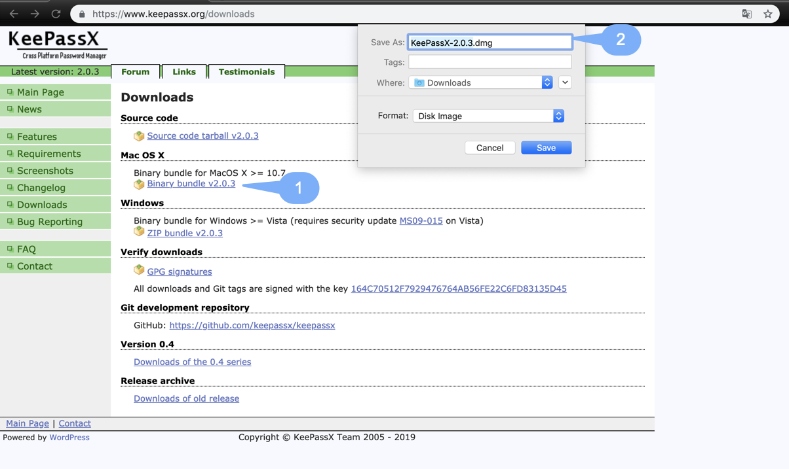
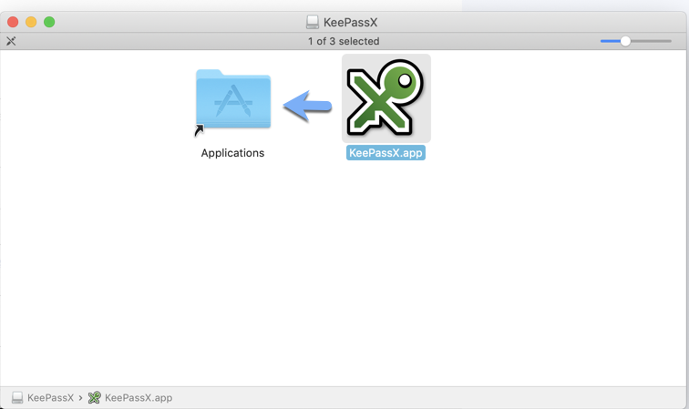
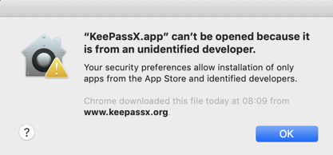
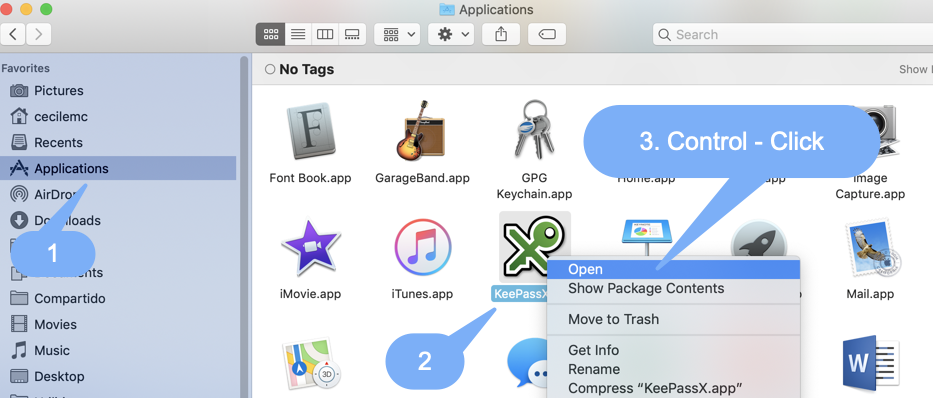
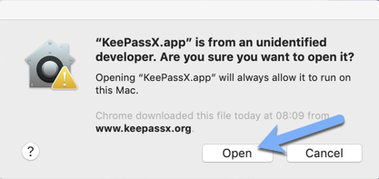
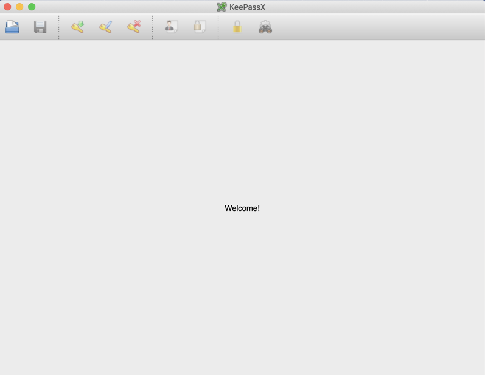
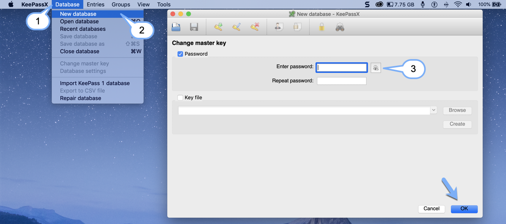
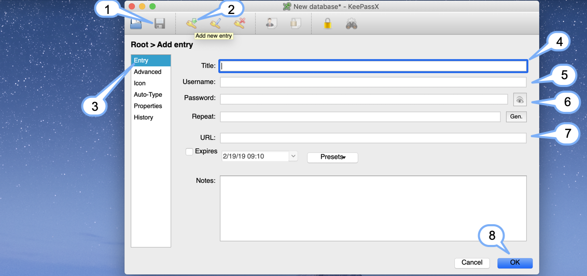
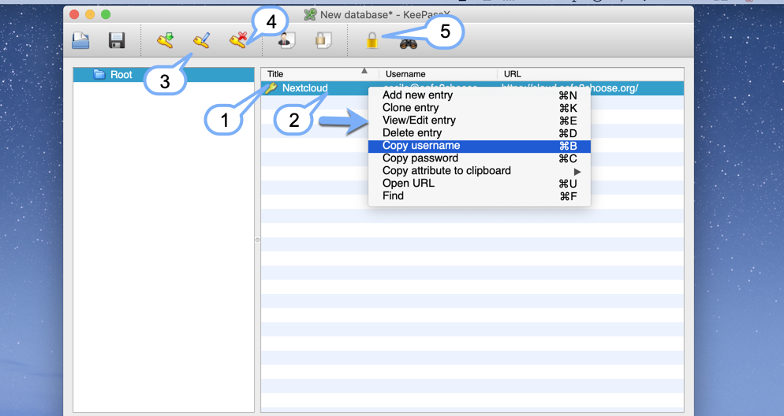
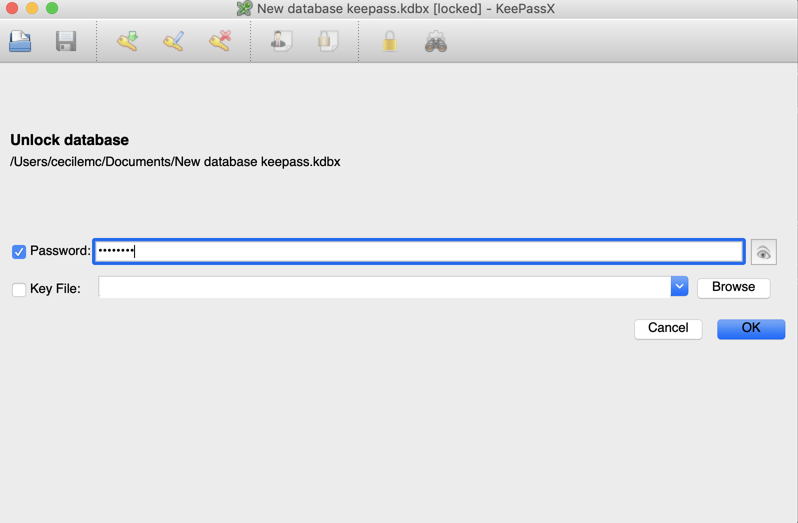

mac OS Installation
Download the latest version here: https://www.keepassx.org/downloads Be sure to download the correct version, depending on your Operative System (Windows, macOS).

Open the downloaded file and drag it to the applications folder

Once is installed, open the keepass app, if a windows like this appears.

Just need to your application folder, control - click an then [Open]

This window appears, press [Open]

This is the first window you will see after finish with the installation

Creating a Database
The next step is to create a new database, that’s the place where we will be storing all our data.
- Go to the top menu of KeepassX, select [Database].
- Choose [New database]
- We need to create a password to protect our database. Type it and confirm it, you can click on the "eye" to reveal the password you’re writing, then press [Ok]

This is the next Window you will get after creating your password:
- The first thing that we need to do now, is to save our database somewhere in our PC. Click on this icon to select the location where you want to do this.
- Now, it’s time to create our first entry in our database. Click on [Add new entry] icon to create it.
- This is the form you have to fill to create a new entry.
- Title: Type a title to recognize the entry.
- Username: For example your email account.
- Password: Type the password for your email account
- URL: For example, you can save the link to Cloud, where you need an username and a password to access the site. You can add some notes to the entry.
- And finally click on [Ok] to save your entry

As you can see, your new entry has been saved into your database.
- The entry you added is listed in the database
- If you want to copy any of the info you added, just need to click on the entrey and the options will appear
- You can edit or consult all your entries by selecting the [View/edit entry] icon OR you just have to double click the entry. [1]
- If you want to delete your entries, just click on the [Delete] icon
- Finally, we need to lock our database. Click on the little yellow lock icon in the top menu of keepassX.

Once we locked our Database, we need to put our Password
, press
[Ok] and you will see your database again

Now you're Done!!!